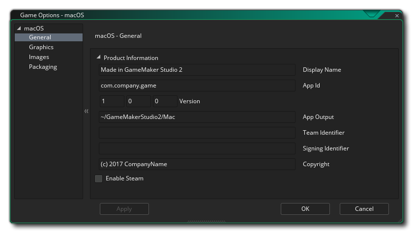
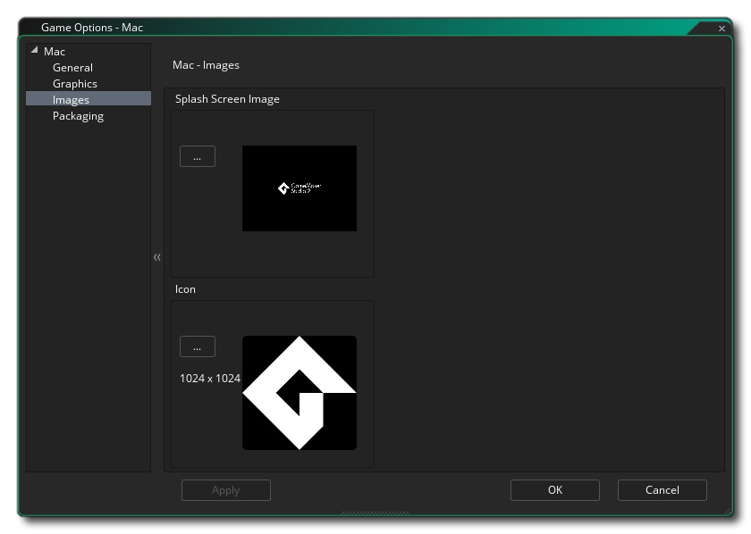
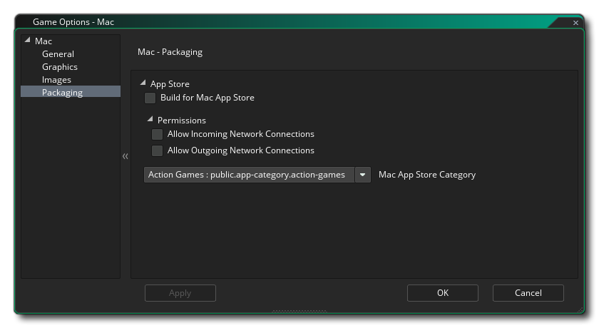

In diesem Abschnitt werden die verschiedenen Optionen beschrieben, die Ihnen zur Verfügung stehen, um zu steuern, wie Ihre Mac OS-Spielprojekte kompiliert werden. Die verschiedenen Abschnitte sind:

Geben Sie im Abschnitt " Produktinformationen" zunächst den Anzeigenamen Ihres Spiels und anschließend die Versionsnummer, die App-ID, die App-Ausgabedatei und die Copyright- Details ein. Die App-Ausgabe ist der Ort, an den sich Ihre Spieleinstallationsdateien auf Ihrem Mac-Entwicklungscomputer befinden. Wenn Sie Ihre erstellen .app.zip Diese Datei kann sich überall befinden (der Speicherort, den Sie beim Speichern angeben, ist nicht die einzige Kopie davon) .app.zip ), aber die .pkg In diesem Ordner befinden sich weitere Dateien, in denen Sie lokale Installationen über das Terminal testen können, um den Kauf im Mac Store usw. zu simulieren.
Hier müssen Sie auch die Team-ID angeben, die Sie zum Signieren der endgültigen Anwendung verwenden möchten, die GameMaker Studio 2 für Sie erstellt. Wenn Sie es hier einstellen, wird die Team-ID, die Sie in den macOS- Einstellungen angegeben haben, überschrieben. Nach der Teamkennung haben Sie auch die Möglichkeit, die Signierungskennung anzugeben, die von Apple für alle Nicht-Appstore-Anwendungen (z. B. Steam Spiele) benötigt wird.
Die letzte Option ist die Aktivierung von Steam in Ihrem Spiel. Wenn Sie diese Option aktivieren, stellen Sie sicher, dass Sie das Steam Works SDK installiert haben (siehe hier ) und dass Sie die Steam App-ID in den Allgemeinen Optionen für das Spiel hinzugefügt haben.
Die Grafikoptionen sollten Sie konfigurieren, um festzulegen, wie die Grafikkarte Ihres Ziel-Macs in Ihrem Spiel verwendet wird. Die folgenden Optionen stehen zur Änderung zur Verfügung:
- Menü und Andocken im Vollbildmodus zulassen: Wenn diese Option aktiviert ist, wird das OS-Menü angezeigt und Andocken, wenn sich das Spiel im Vollbildmodus befindet. Dies ist standardmäßig deaktiviert.
- Cursor anzeigen: Wenn diese Option aktiviert ist, wird der normale Mac OS-Cursor angezeigt. Wenn Sie das Kontrollkästchen deaktivieren, wird kein Cursor angezeigt, es sei denn, Sie haben in Ihrem Spielcode einen Cursor erstellt. Dies ist standardmäßig deaktiviert.
- Vollbild starten: Wenn diese Option aktiviert ist, wird das Spiel im Vollbildmodus gestartet, andernfalls wird es im Fenster angezeigt. Dies ist standardmäßig deaktiviert.
- Vollbildwechsel zulassen: Mit dieser Option kann der Benutzer mit den Standard-Kurzbefehlen für Mac OS von Vollbild zu Fenster und zurück wechseln. Dies ist standardmäßig deaktiviert.
- Farben zwischen Pixeln interpolieren: Aktiviert die Interpolation, wodurch die Pixel im Wesentlichen "geglättet" werden. Für gestochen scharfe Pixelgrafiken sollte diese Einstellung deaktiviert sein. Wenn Sie jedoch schöne Alpha-Blends und geglättete Kantengrafiken haben, sollten Sie diese Einstellung lieber beibehalten. Dies ist standardmäßig deaktiviert.
- Verwenden Sie die Synchronisierung, um ein Zerreißen zu vermeiden: Dadurch wird V-Sync ein- oder ausgeschaltet (V-Sync wird verwendet, um die Aktualisierungsgeschwindigkeit Ihres Spiels mit der Aktualisierungsrate des Monitors zu synchronisieren). Wenn Sie ein Spiel mit einer Raumgeschwindigkeit von 120 haben und der Spieler über einen Bildschirm mit einer Bildwiederholfrequenz von 60 verfügt, wird die Spielgeschwindigkeit auch auf 60 eingestellt, wenn Sie diese Option aktivieren. Dies ist standardmäßig deaktiviert.
- Fenstergröße ändern: Wenn Sie diese Option auswählen, kann der Benutzer die Größe des Spielfensters ändern (die Option Randloses Fenster muss deaktiviert sein , damit dies funktioniert). Diese Option ist standardmäßig deaktiviert.
- Aktivieren Retina: Diese Überprüfung wird den Back - Puffer bei der höheren (Ist) Auflösung, wenn das Spiel auf einer Netzhaut aktiviert Monitor ausgeführt wird, während un-Überprüfung wird den Back - Puffer eingestellt bei der scheinbaren (niedriger) Auflösung zu sein. Dies bedeutet, dass das anfängliche Spielfenster auf die doppelte Breite und Höhe des Raums / Ansichtsfensters eingestellt wird, auf das der erste Raum eingestellt ist. Dies skaliert jedoch NICHT die Anwendungsoberfläche entsprechend. Wenn Sie also möchten, dass Ihr Spiel die Retina-Anzeige optimal ausnutzt, sollten Sie auch die Anwendungsoberfläche auf die Fenstergröße einstellen (beachten Sie, dass dadurch die Pixel verdoppelt werden.) entlang der Breite und Höhe, aktivieren Sie dies nur und skalieren Sie die Anwendungsoberfläche, wenn Ihr Spiel von der erhöhten Auflösung profitieren wird. Diese Option ist standardmäßig deaktiviert.
- Skalierung: Hier können Sie auswählen, ob das Seitenverhältnis beibehalten werden soll (dh ein 4: 3-Raum wird bei einem 16: 9-Format als "Letter Box" bezeichnet) oder vollständig skaliert werden (das Bild wird so vergrößert, dass es in den gesamten Bildschirm passt).
WARNUNG! Durch das Ausschalten der Anwendungsoberfläche werden alle in den Mac-Spieloptionen festgelegten Skalierungsoptionen deaktiviert, bis sie wieder eingeschaltet werden. Weitere Informationen finden Sie unter Die Anwendungsoberfläche.Schließlich gibt es noch die Möglichkeit, die Größe der Textur-Seite einzustellen. Die Standardgröße (und die meisten kompatiblen) ist 2048x2048, aber Sie können zwischen 256x256 und 8192x8192 wählen! Es gibt auch eine Schaltfläche mit der Bezeichnung Ansicht, die die Textur-Seiten für diese Plattform generiert und ein Fenster öffnet, in dem Sie sehen können, wie sie aussehen. Dies kann sehr nützlich sein, wenn Sie die Struktur der Textur-Seiten sehen möchten und verhindern möchten, dass Textur-Seiten größer (oder kleiner) als erforderlich sind.
HINWEIS: Beachten Sie, dass je größer die Textur-Seite ist, desto weniger kompatibel ist Ihr Spiel auf Macs mit niedrigeren Spezifikationen.

Im Bilderbereich geben Sie die Bilder an, die Ihr Spiel benötigt. Für Mac müssen Sie eine Symboldatei angeben (die sich in befinden muss) .png Format und 1024x1024px) sowie einen Startbildschirm (der sein kann) .png. .bmp. .jpg oder .gif Format). Der Begrüßungsbildschirm wird angezeigt, während das Spiel geladen wird.

Wenn Sie möchten, dass das fertige Spiel App Store Ready ist, müssen Sie die Option Build for Mac App Store aktivieren. Beachten Sie jedoch, dass dies nur funktioniert, wenn Sie ein registrierter Entwickler sind und über die erforderlichen Zertifikate verfügen. Darunter befinden sich die App- Berechtigungen, die Sie nur überprüfen sollten, wenn sie zutreffend sind, da Apple Ihre App ablehnen kann, wenn sie überprüft wird, wenn sie nicht benötigt werden, oder umgekehrt. Diese Optionen erlauben Ihrem Spiel einfach die Verwendung der http_ und url_ Funktionen. Wenn Sie GamePads in Ihrem Spiel unterstützen möchten, sollte die Option zum Erstellen eines App Store Ready-Pakets deaktiviert sein.
Schließlich müssen Sie die App-Kategorie auswählen (weitere Informationen finden Sie hier ).
Beachten Sie, dass GameMaker Studio 2 über ein Project Image Generator- Tool verfügt, mit dem automatisch alle Bilder erstellt werden können, die für die verschiedenen Zielplattformen benötigt werden, auf denen Ihr Spiel kompiliert wird. Wenn Sie dieses Tool verwenden, sollten Sie die erstellten Bilder überarbeiten, um sicherzustellen, dass sie Ihren Anforderungen entsprechen.